No hay objeto material que pueda expresar todo lo que me haces sentir. Así quería crear algo único y especial para nosotros, celebrando nuestro amor y todo lo que hemos compartido.
Hermosos momentos juntos, que siempre guardaremos en nuestros corazones y un recuerdo único que siempre podremos volver a ver juntos.
Cada imagen guarda un fragmento de nuestra historia.
Toca una
fotografía para revelar el recuerdo.
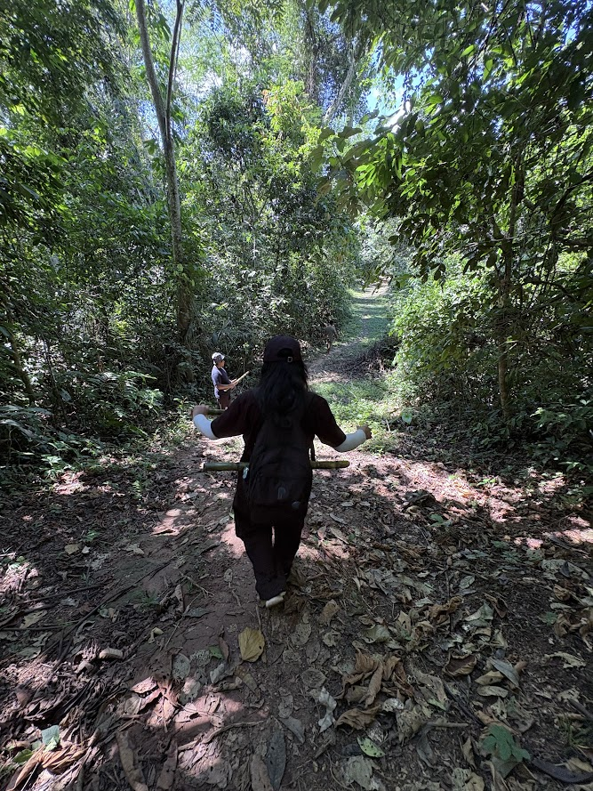
Sin pensarlo tome la foto, y de pronto se volvio mi favorita. En ella puede ver a una persona de la cual podría aprender mucho. Y quien lo diría que terminariamos enamorandonos. La más bonita coincidencia.
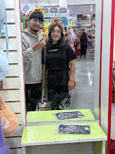
Fue una semana en la cual nos vimos todos los días y sin pensarlo aquel día pregunte si podía acompañarte y tu respuesta fue si. Pasamos un bonito tiempo y ahí tomamos nuestra primera foto juntos, la primera de muchas.
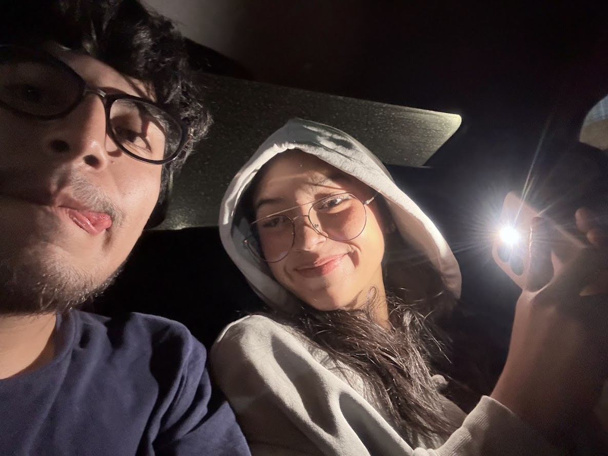
Ese día te di mi polera y ese mismo día me di cuenta de lo mucho que empezabas a importarme, de como sentía la necesidad de que te abrigaras y luego verte puesto mi polera y que te quedaba muy grande, se sentía bonito, te veías muy tierna y bonita. Ese día no solo me di cuenta de lo mucho que me importabas sino que quería siempre estar ahí para cuidarte.
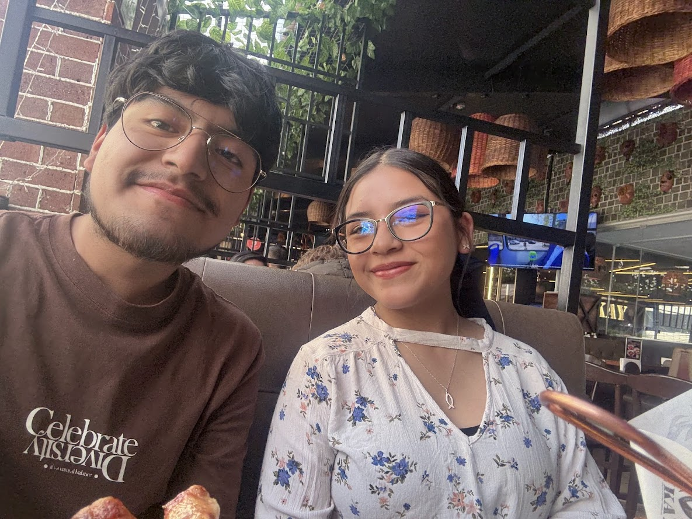
En aquel momento en el que me sujetaste la mano. Todo se detuvo y solo quería que eso durará para siempre, fue algo bonito, algo tierno, el hecho de no querer soltar tu mano y como ambos estabamos muy nerviosos era algo único y muy especial, como desde ese día siempre buscabamos la mano del otro.
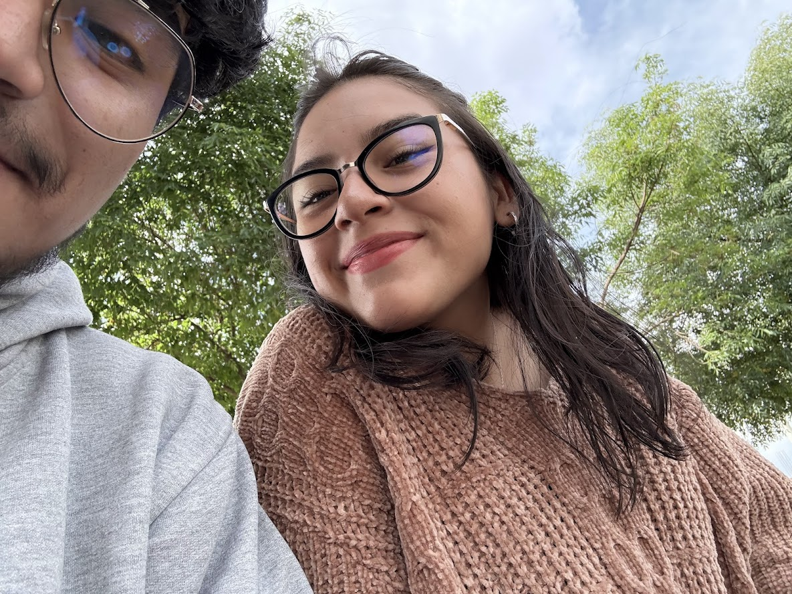
Ese día fue uno de los mejores. El salir contigo, sentarnos, pintar y compartir de ese lindo momento, fue muy especial para mi. Pero lo que lo hizo más especial fue lo que paso después de eso. Cuando fuimos con Richard y Anita y durante la compras, la carrera que hicimos y el recostarme en tu hombro y poder descansar ahí. Se sentía muy real, muy especial, muy nosotros. Te ibas convirtiendo en mi lugar seguro.
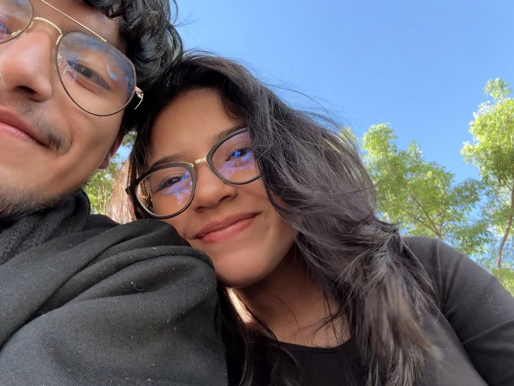
Fue la vez en la cual me sentí tan nervioso cuando me abrazaste y tenerte tan cerca, que empezaba a pensar que yo también te gustaba.
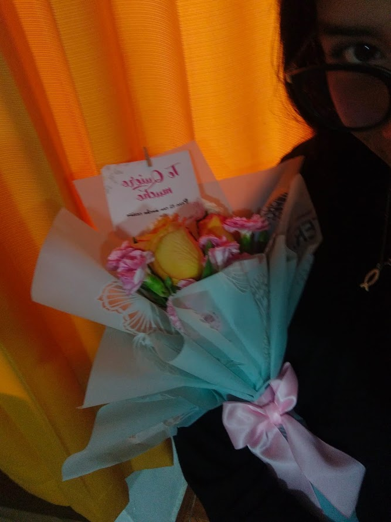
Tenía la idea de que regalar rosas era algo vergonzoso el caminar por la calle con las flores y lo que diría la gente. Pero al pensar que el darte flores, te sacaría una sonrisa y te alegraría, cambio mi opinión de camino a entregarte las rosas, solo pensaba en como te lo entregaría, si te gustaría, en ese momento solo quería verte y entregarte las rosas y ver tu sonrisa, demostrarte que si me importas mucho y que quería ser yo quien te regale siempre flores
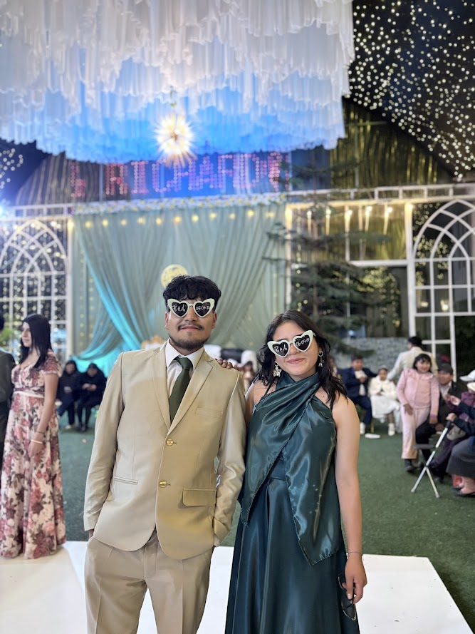
La boda. Durante todo ese tiempo me fui enamorando de ti, y de como tenías un hermoso corazón dispuesto a ayudar, que apesar del cansacio que tenías y te quedabas despierta hasta muy tarde, solo para ayudar a otros. Y como todo lo hacías con mucho amor y esmero, me iba gustando mucho y yo un chico muyyy enamorado de ti solo quería acompañarte en las desveladas, en tus actividades, en todo momento.
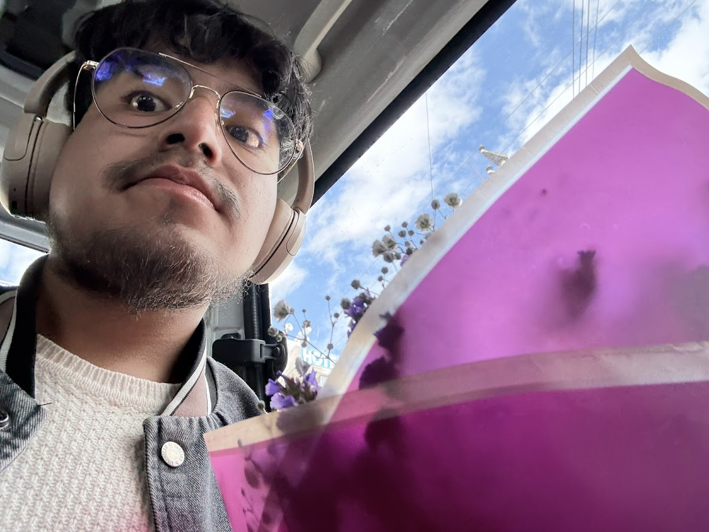
Quería darte una sorpresa, solo por bonita. Te mereces todo lo mejor mi niña hermosa
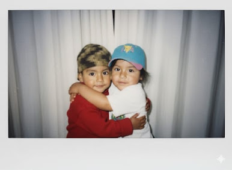
Cuando me enviaste esa foto, sentía una emoción muy grande, que lo hayas hecho tu y darme cuenta de lo muy feliz que me hacías con cada detalle que tenías conmigo. Mi corazón se siente muy alegre contigo a mi lado.
Recuerdo que le decía indirectamente a Richard que te invitará, porque fue el tiempo en el cual no hablamos, pero tenía muchas ganas de verte, e intentaba encontrar una excusa para poder verte y compartir contigo.
Una de las cosas que quiero, es que te sientas segura cuando estés conmigo, que en mi puedas sentirte segura, en paz y que todo esta bien, quiero estar en tus buenos y malos momentos, cuidando de ti y apoyandote.
Quiero ser quien te apoye en todas tus actividades, en cada momento que sea posible, poder acompañarte y ser de ayuda para ti.
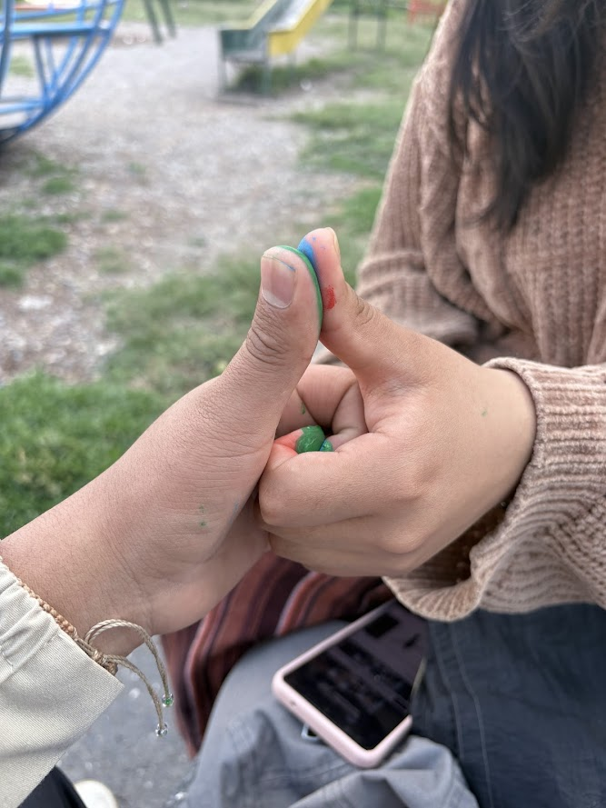
Nuestras manos encajan perfectamente. En ese momento sentí algo tan bonito que no necesitaba nada más para ser feliz. Me di cuenta que contigo sería muy feliz y por eso quiero un futuro a tu lado que podamos cumplir todas nuestras metas.
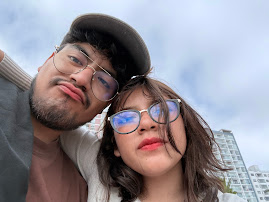
La idea de estar juntos conociendo una ciudad nueva, me parece un increible plan, y que mejor si lo hacemos tambien sirviendo al Señor y trabajando en su obra. Lo que más deseo es tenerte a mi lado y poder crecer en Dios juntos, siguiendo los planes que tiene para nosotros.
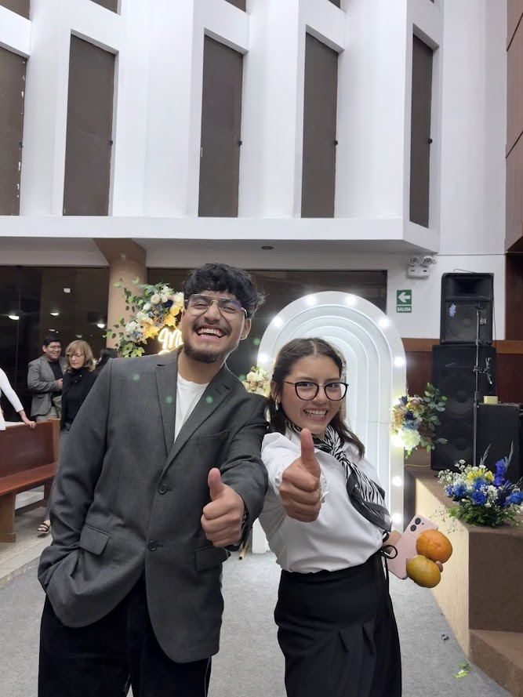
Fue un hermoso tiempo que pude compartir contigo. En el cual pude conocer a tus papás y aumentaron más las ganas de hacer la cosas bien y poder tener un futuro juntos, en el cual tus papás puedan confiar en mi. Estoy muy orgulloso de ti y todo lo que estas logrando
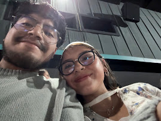
Quiero y deseo seguir compartiendo más momentos contigo. Crear más momentos juntos, y hermosos recuerdos. Quiero seguir junto a ti en los momentos dificile y en los buenos. Quiero luchar y perseverar por nuestra relación tan hermosa. Y que cada día me siga enamorando de ti.